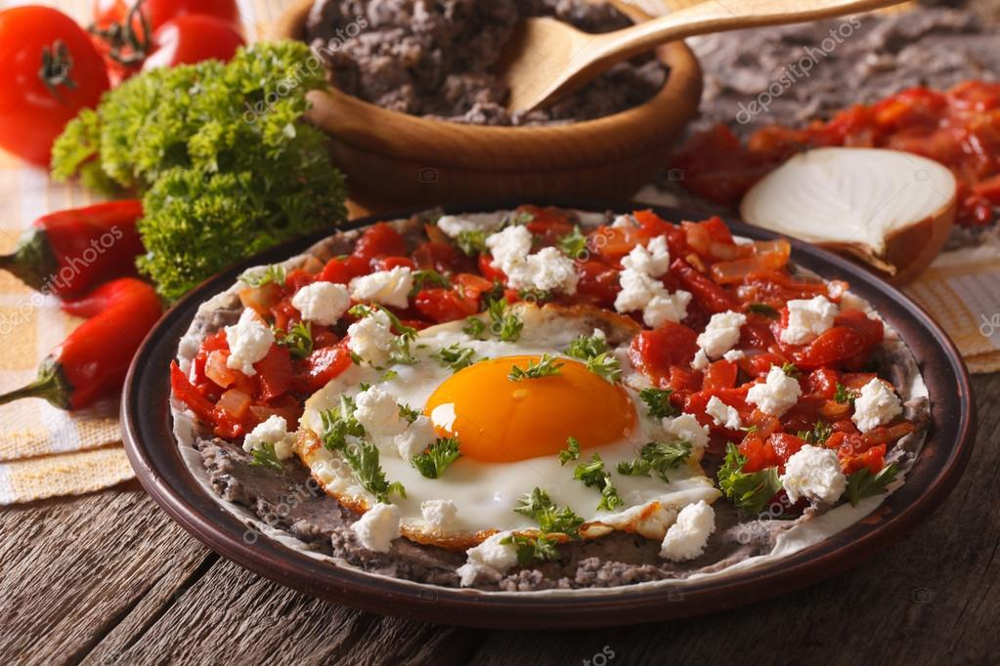

¿Que son los "Huevos Rancheros"?
Los huevos rancheros son un desayuno mexicano tradicional, que consiste básicamente en: huevos fritos sobre tortillas de maíz con una salsa hecha de tomates, chiles y otros vegetales picados y frijoles refritos, también suele llevar guacamole y pico de gallo.
Ingredientes para los "Huevos Rancheros":
- Dos huevos de gallina.
- Dos tomates rojos.
- Dos chiles serranos.
- 1/4 de Cebolla blanca.
- 1/2 Diente de ajo.
- Dos tortillas de maiz.
- Dos cucharadas de frijoles fritos.

Preparacion:
- En otra sartén, ponemos unas gotas de aceite de oliva virgen extra, la calentamos y doramos las tortillas. Una a una, por ambas caras. Las retiramos y las reservamos en caliente. También se pueden calentar en el microondas en un recipiente apto durante 15 segundo a 600 W.
- Cascamos los huevos y freímos en otra sartén con un poquito de aceite de oliva, no mucho, deben quedar como huevos al plato. Pero con cuidado de no molestar a la yema, la queremos entera y poco cuajada.
- Salamos con una pizca de sal las yemas, podemos añadirle polvo o sal de ajo para añadir más sabor. Ya tenemos todos los ingredientes listos para montar nuestro plato. Queda muy bien si le añadimos el cilantro fresco por encima, le va también que ni pintado.
- Servimos con encima de las tortillas calientes (de trigo o maíz, vuestras preferidas) que servirán a modo de plato y perfectas para mojar en el huevo y empujar con la salsa de tomate picante que acompañan los huevos fritos. Estos huevos admiten tantas variaciones como familias y cocineros, lo cocinan, hay quienes le añaden unos fríjoles fritos, arroz blanco hervido, carne molida, aguacate, … Simplemente deliciosos.
- Si no disponemos de salsa de chile podemos sustituirla por un chorro de salsa Tabasco o Valentina. Más o menos cantidad según nuestros gustos picantones.
Caja de comentarios